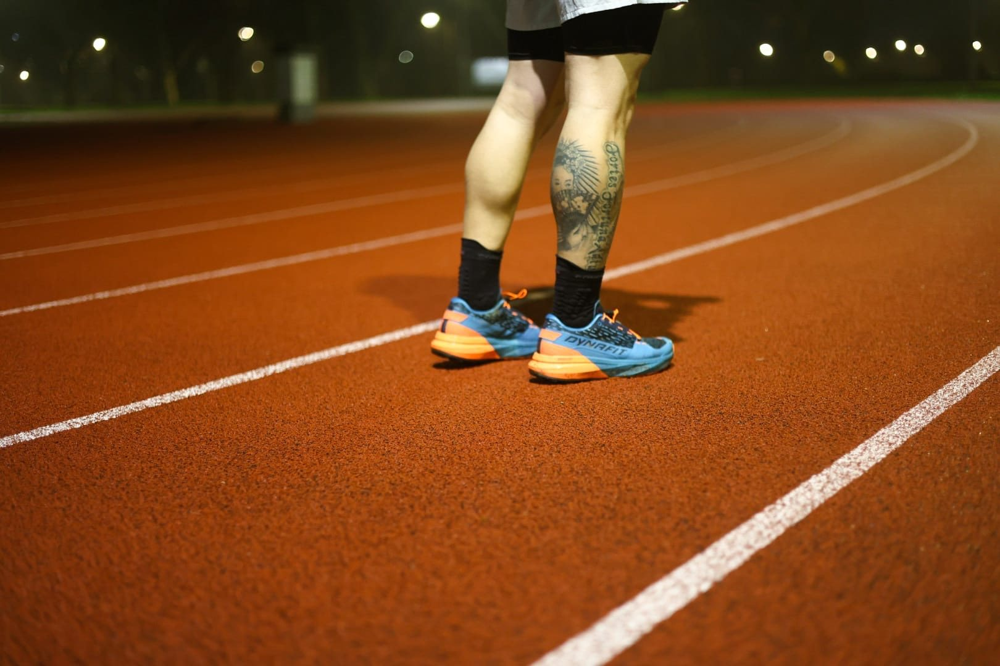
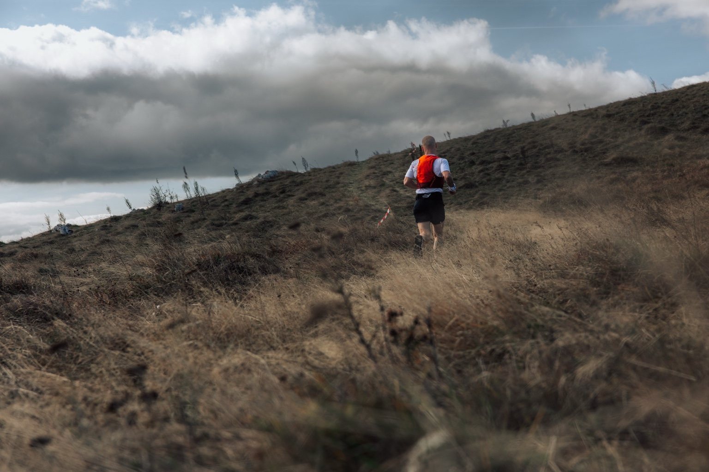
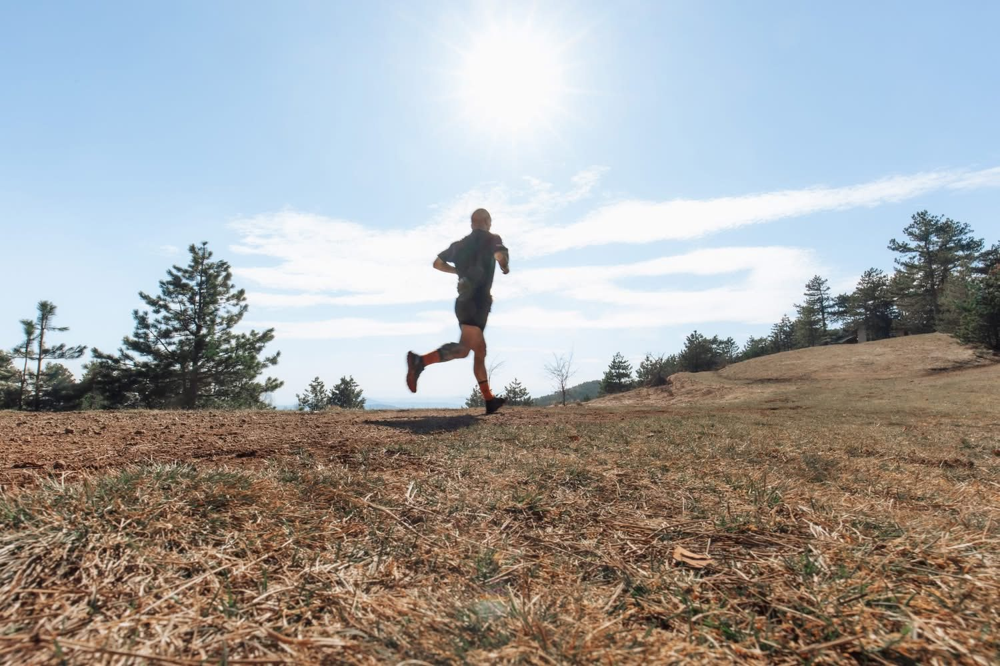

👟
Od kauča do cilja
Za početnike i one koji misle da trčanje nije za njih. Spojler: možda ipak jeste.
5 KM / 10 KM
Trčanje je ozbiljna stvar. Mi ne moramo da budemo. Pametan trening, blatnjave patike i poneki razgovor sa magarcem.
Jer svako može da počne. Bez članarine, bez prijave i bez tajnog recepta za brže noge.
Nemaš novca za trenera? Nema problema.
Ovde ćeš pronaći besplatne smernice da napraviš prve korake.
Imaš veliki cilj i želiš nekoga da te vodi? Tu sam.
Samo nemoj da očekuješ da magare trči umesto tebe. 😂
Otvoreni vodiči koje možeš pročitati odmah. Ovo su opšte smernice, ne zamena za plan prilagođen tebi.
Počni sa 3 izlaska nedeljno, uz bar jedan dan odmora između. Prvih nedelja naizmenično hodaj i trči: na primer 1 minut vrlo laganog trčanja i 2 minuta hoda, 8 puta. Ako ti je preteško, skrati trčanje; ako je lako, postepeno produžavaj.
Tempo je dobar kada možeš da razgovaraš. Ne moraš da pretrčiš 5 km bez pauze odmah — cilj je da se krećeš redovno, bez jurnjave.
Magare kaže: brzina nije uslov za početak. Patike jesu.
Većina rekreativnih treninga treba da bude dovoljno lagana da možeš da izgovoriš celu rečenicu. Teži treninzi imaju svoje mesto, ali zahtevaju oporavak.
Ne povećavaj istovremeno i dužinu i intenzitet. Ako si umoran, loše spavaš ili osećaš neuobičajen bol, uspori ili odmori. Napredak nastaje kroz kontinuitet, ne kroz dokazivanje svakog utorka.
Ako svaki put oboriš lični rekord, možda ti je sat najveći rival. 😂
Kada ti je 5 km već prijatna distanca, zadrži 2 kraća lagana treninga i postepeno produžavaj jedan nedeljni izlazak. Ubaci lakšu nedelju kad osetiš da se umor gomila.
Trčanje i hodanje u kombinaciji su sasvim legitimni. Vežbe snage, san, dovoljno hrane i voda pomažu da telo prati ambicije. Na prvi cilj od 10 km idi sa željom da završiš zdravo, ne da pobediš sve ulice u gradu.
Deset kilometara je deset kilometara. I ako si hodao uzbrdo.
Ako imaš zdravstvene tegobe, raniju povredu ili bol koji se pojačava, posavetuj se sa zdravstvenim stručnjakom pre nastavka treninga.
Bilo da juriš prvih 5 km ili poslednji uspon na ultra trci — individualni plan treba da odgovara tebi, tvom životu i obavezama, a ne obrnuto.
Za početnike i one koji misle da trčanje nije za njih. Spojler: možda ipak jeste.
Polumaraton, maraton i novi lični rekordi. Sa planom, oporavkom i bez bespotrebnog dokazivanja na svakom treningu.
Trail i ultra avanture. Usponi, spustovi i ona čuvena rečenica: „Ma nije još mnogo ostalo.“
Nisam počeo da trčim zato što sam imao veliki sportski plan. U jednom periodu života bio sam pomalo izgubljen. A onda se, sasvim slučajno, pojavilo trčanje.
Jedna opklada. Jedan polumaraton. I ljubav koju nisam očekivao.
Kilometar po kilometar, trčanje je postalo moje vreme za razmišljanje i način da ponovo pronađem pravac. Posle su došli maratoni, trail, ultra distance, žuljevi i ono neizbežno: „Šta je meni ovo trebalo?“ 😂
Počeo sam spontano da pomažem drugarima oko treninga. Oni su me ohrabrili da to iskustvo podelim sa još ljudi. Tako je nastalo Samo trči.
Ne moraš da budeš najbrži. Ne moraš ni da voliš uzbrdice. Važno je da napraviš prvi korak — a ja sam tu ako ti zatreba podrška.
Ne postoji loš teren. Dobro, osim kad kažeš „ovo je poslednji uspon“.



Priče sa staze, treninzi, porodica, posao i povremeno preispitivanje odluke da trčimo uzbrdo. Svaka priča sada ima svoj link, da možeš lako da je podeliš.
{{ post.description | escape }}
Pročitaj priču ↗Nekoliko istina koje razumeju samo ljudi koji dobrovoljno trče uzbrdo.
“Lagani trening je lagan. Dok ne sretneš drugara.
“Još samo ovaj uspon. Rekao je, peti put.
“Nije problem u nogama. Problem je što sam pogledao profil staze.
Želiš individualni plan, imaš pitanje ili jednostavno voliš da pričaš o trčanju? Javi se i dogovorićemo sledeći korak. A ako tek počinješ, besplatni vodiči su već tu za tebe.
Ili piši direktno na matijamladenovic2411@gmail.com — magare čita poruke, Matija odgovara.